Токио · Хатиодзи · гора Такао
Гора Такао весной: тысяча сакур на хребте, музей о горе и обед у очага
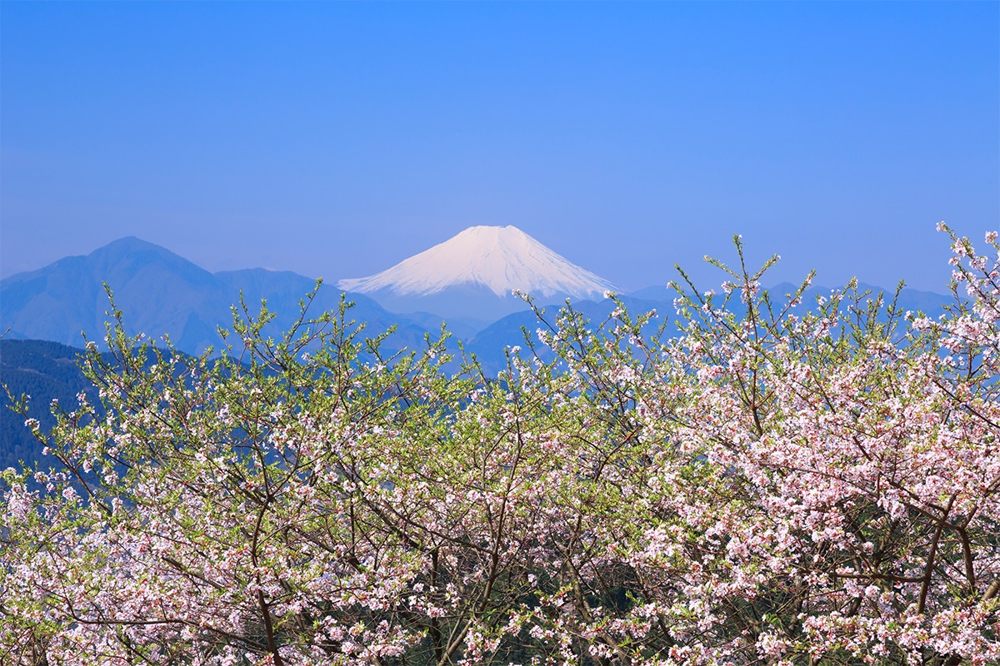
Гора Такао стоит на западной окраине Токио, и от центра до неё всего час на поезде. Весной сюда едут ради двух видов: склонов в цвету сакуры и самой горы, показанной в музее у её подножия, а завершает день обед на углях в старом японском саду.
Сакура
К тысяче вишен по горному хребту
Гора Такао поднимается на окраине Хатиодзи, на границе столичного округа Токио и префектуры Канагава. Французский путеводитель «Мишлен Вояжёр Пратик Жапон» дал ей три звезды и отметил как место, которое обязательно нужно увидеть. С вокзала Синдзюку сюда идёт прямой поезд, а на месте путешественника ждёт лес, который меняется с каждым сезоном. Весной лучше всего подняться пешком по склонам, покрытым цветущей сакурой.
Главная цель весеннего похода это вишнёвая аллея «Такао сэмбондзакура», «Тысяча сакур Такао». В пору цветения она окрашивает горные склоны в розовый цвет.
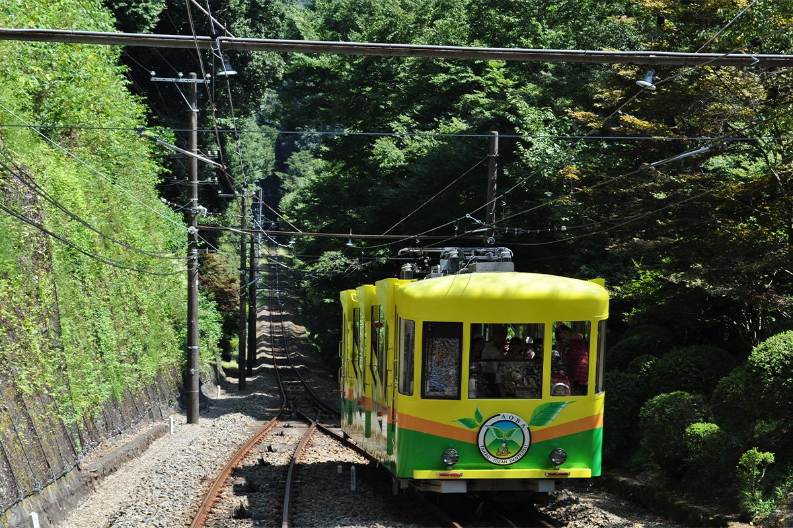
От станции Такаосангути путь начинается с улицы, ведущей к горе, где стоят лавки собы и сувениров. Она приводит к нижним станциям фуникулёра и кресельной канатной дороги. Фуникулёр и подъёмник без усилий поднимают сквозь зелень до середины склона, а оттуда до вершины около 40 минут пешком. В ясный день по дороге видно Фудзи, а в другую сторону открывается Токио с башнями Tokyo Tower и Tokyo Skytree. Со смотровой площадки на вершине, на высоте 599 метров, видны окрестные хребты, горы Окутама на западе столичного округа и пригороды Токио.
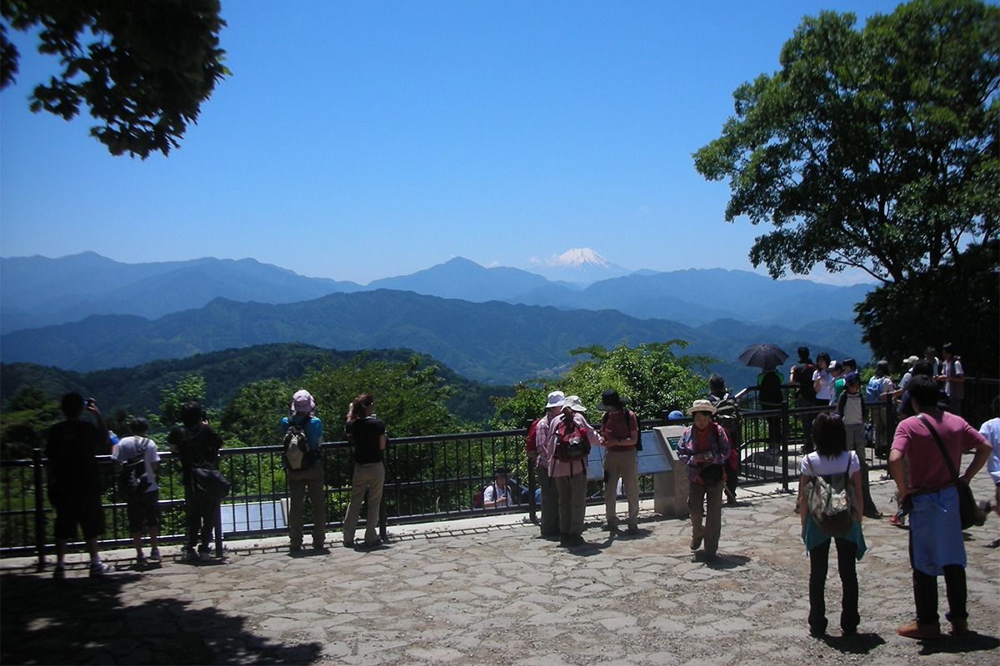
От вершины до сакуры совсем недалеко. С западного края вершины вниз ведёт каменная лестница, и через несколько минут тропа выходит на поляну Момидзидай. Здесь растут клёны ирохамомидзи, которым около 80 лет. От этой поляны вдоль хребта и тянется аллея «Тысячи сакур». Под розовым сводом тропа идёт до соседней горы Коботокэ-Сирояма, где на широкой вершине тоже есть смотровая площадка. По пути стоят чайные домики, где подают блюда из горной зелени сансай и суп с грибами намэко.
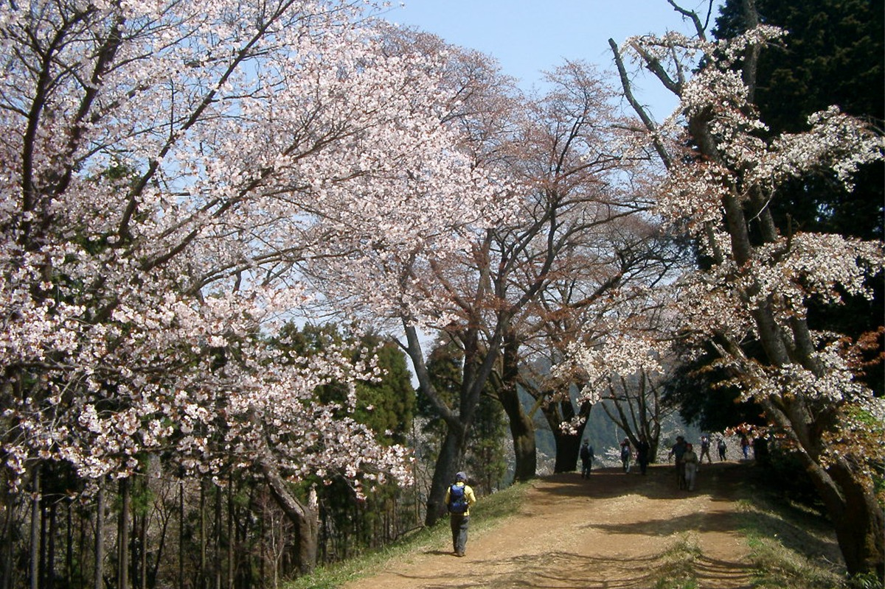
На горе Такао есть что посмотреть и помимо сакуры. На тропе номер 4 висит единственный на горе подвесной мост. На середине склона стоит храм Якуо-ин Юки-дзи, а весной цветут не только вишни, но и рододендроны.
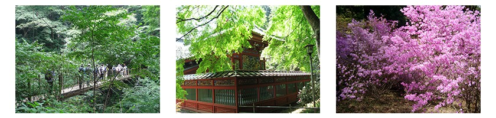
Гора Такао
- Адрес
- Токио, Хатиодзи, Такао-мати, гора Такао
Музей
Второй вид Такао: под крышей
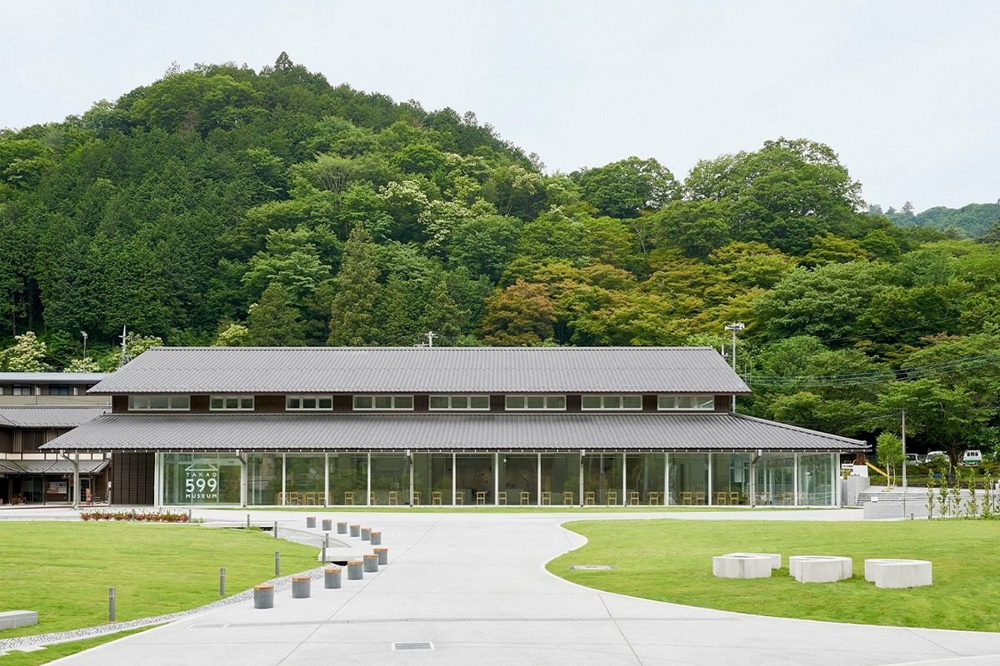
Музей стоит в четырёх минутах ходьбы от станции Такаосангути, и зайти в него можно и до подъёма, и после спуска. Гору Такао называют кладовой природы во все времена года, и здесь её тоже можно увидеть.
Название TAKAO 599 MUSEUM повторяет высоту горы, 599 метров. Природа Такао и разнообразие её обитателей показаны здесь как искусство. В просторных залах много образцов растений и насекомых. Особенно хороши растения, которые растут на горе: их законсервировали целиком, вместе с корнями, и они выглядят такими, какими были в лесу.
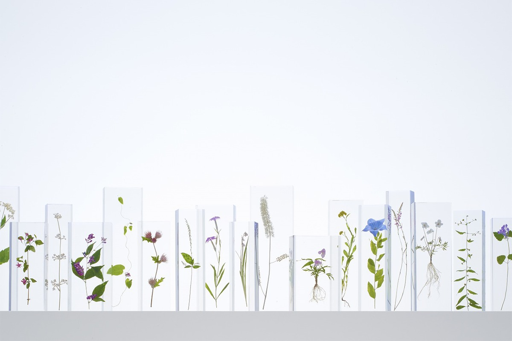
Главное в видеозале это проекция на стену, где закреплены чучела зверей и птиц. Анимационный фильм длиной около семи минут о четырёх сезонах Такао сделала студия визуального дизайна WOW. В нём яркие краски леса, живые звери и даже гора во время сильного ливня.
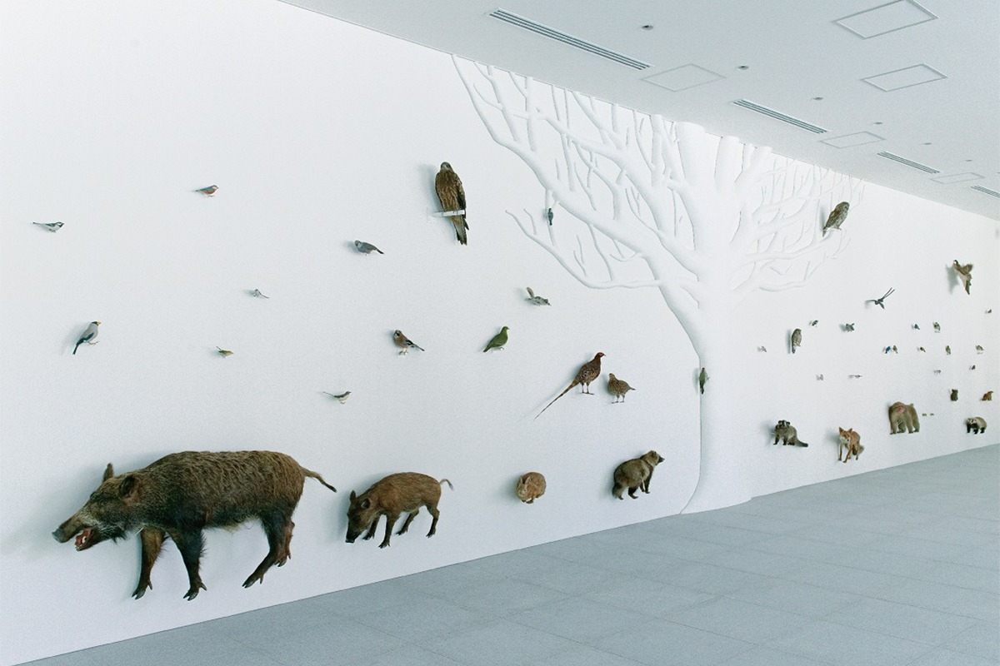
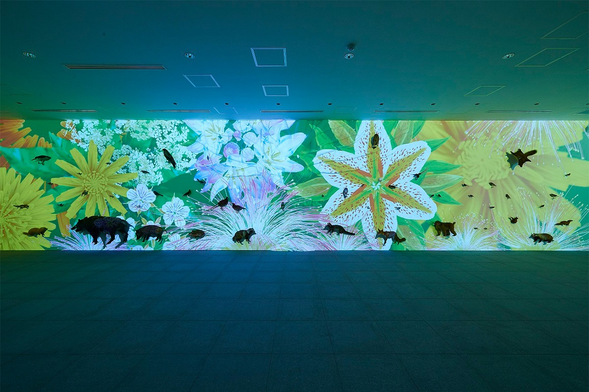
Такую гору, превращённую в искусство, можно назвать вторым видом Такао. В светлом зале с длинными столами и стульями работает кафе: здесь подают фирменную смесь кофе «Такао» и чизкейк фромаж, а мебель сделана из дерева лесов Тамы. В магазине 599shop продают вещи на тему природы Такао. Иногда на газоне перед музеем проходят занятия йогой, а в хорошую погоду на траве можно просто отдохнуть.
TAKAO 599 MUSEUM
- Адрес
- Токио, Хатиодзи, Такао-мати, 2435-3
- Как добраться
- 4 минуты пешком от станции Такаосангути
Обед
Ukai Toriyama: угли и сад на Окутакао
Кроме видов, на Такао едут и за едой. После прогулки по горе стоит заглянуть в Ukai Toriyama. Это первый ресторан группы Ukai, которая принимает важных гостей из Японии и других стран. Он работает с 1964 года и славится отборными продуктами и мастерством поваров.
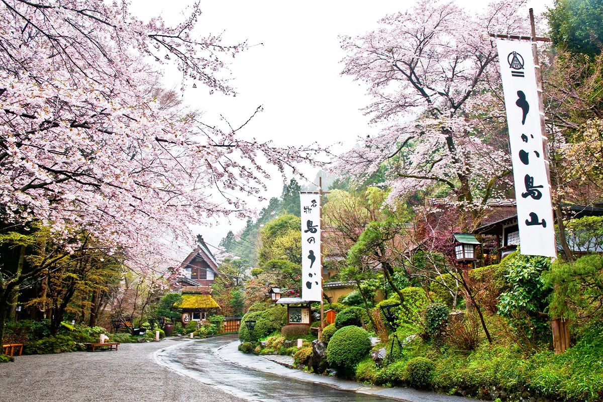
Ресторан стоит на Окутакао, в глубине горы Такао, где весной цветут сакура, рододендроны и фиалки. Японский сад занимает около 6000 цубо, почти два гектара. По саду разбросаны примерно 40 залов в домах в стиле гассё-дзукури с крутыми соломенными крышами и в чайном стиле сукия. Главное в меню это «ирори сумибияки»: продукты медленно жарят на углях в очаге ирори, пока они не станут ароматными.
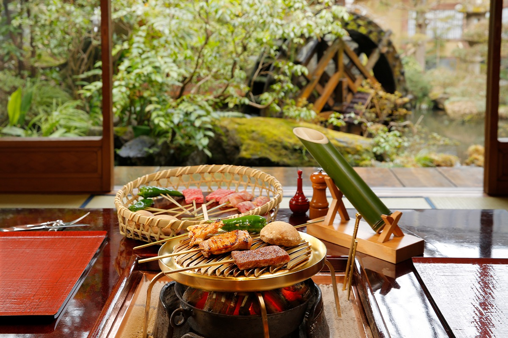
На углях готовят упругую и сочную курицу, отборную японскую говядину вагю и сезонные овощи, и каждый продукт раскрывает свой вкус. Это блюдо, ради которого стоит приехать хотя бы раз. Повара жарят на углях прямо в саду и речную рыбу, а к ней подают простой рис с ячменём и тёртым ямсом «мугиторо». Меню меняется по сезонам. Весной в нём побеги бамбука и горная зелень, а из окна отдельного зала видно весенний сад.
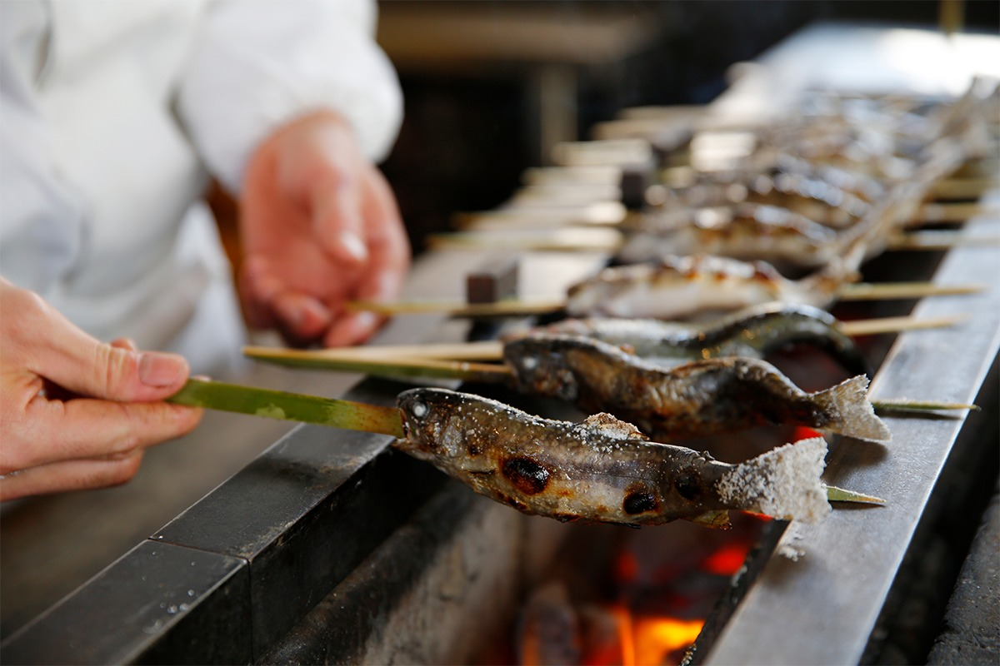
За едой слышно, как журчит ручей, и городская суета остаётся где-то далеко. Дом гассё-дзукури перевезли сюда из Гокаямы в бывшей провинции Эттю. После ремонта он смотрится ещё лучше, а когда цветёт сакура, кажется, что попал в старую японскую деревню, хотя это всё ещё Токио. В октябре 2019 года ресторан пострадал от тайфуна и со 2 февраля по 3 марта 2020 года был закрыт на восстановление и ремонт.
Ukai Toriyama
- Адрес
- Токио, Хатиодзи, Минами-Асакава-мати, 3426
Фото: Хидэки Наватэ, Тайдзи Ямадзаки.